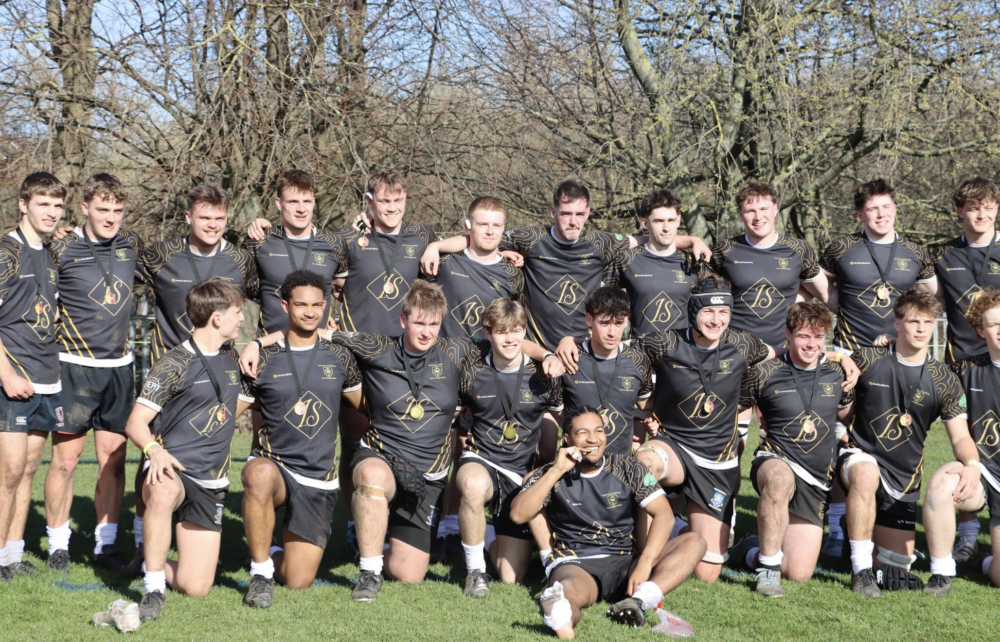
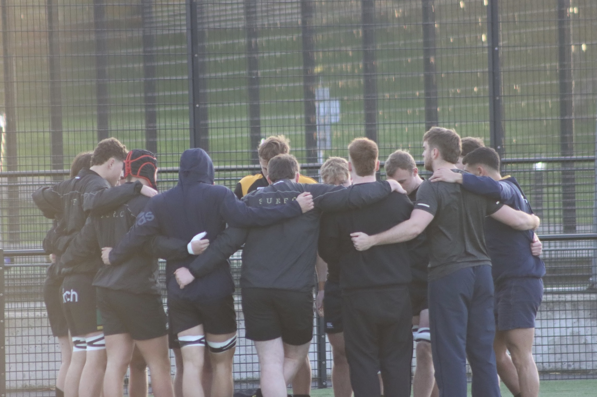
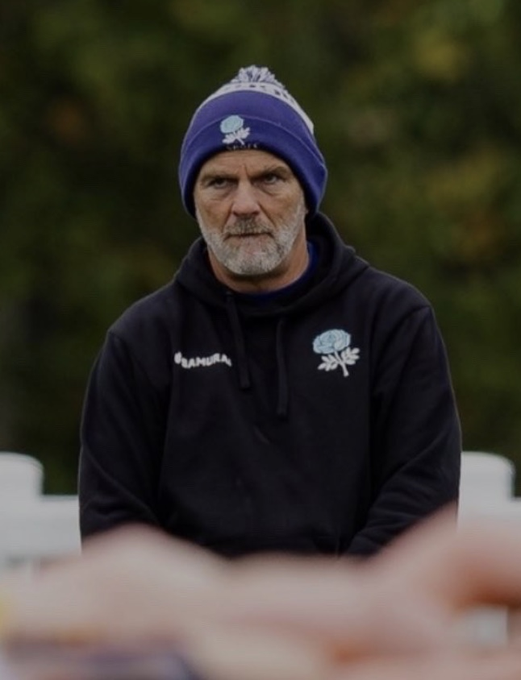
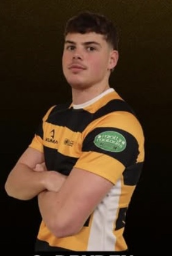
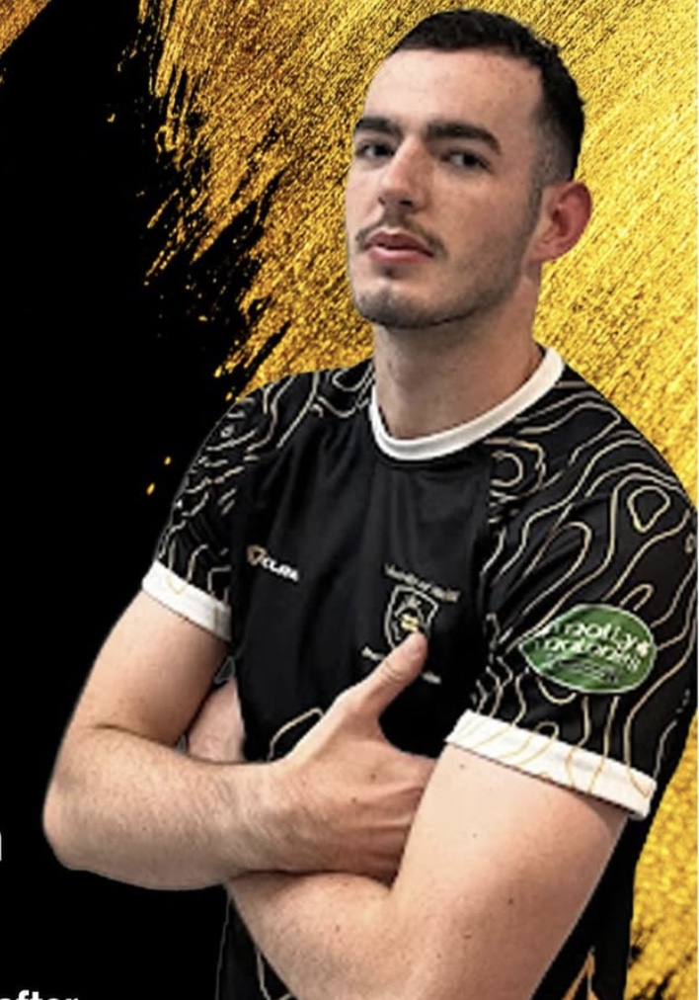

1st XV
Our most competitive side, competing in the BUCS Men's Northern Premier division. We are a high performing side striving for promotion.
 SURFC
Join the Club
SURFC
Join the Club
Four sides, one club
Through top quality coaching, an inclusive development system and a cohort of hardworking players, we maintain a high standard of University Rugby from our developmental pathways to Northern Premier 1 BUCS competition.
Our most competitive side, competing in the BUCS Men's Northern Premier division. We are a high performing side striving for promotion.

Les Deux, the intermediate squad focused on technical development and refinement for the next generation of UOS Rugby Union 1st XV players.

DAS 3s, all about developing skills with the aim of steady improvement to gain promotion.

Our foundation for future stars, providing an environment for less experienced players to fall in love with the game and grow.
The people in charge
Our dedicated coaching team and captains, committed to fostering rugby excellence at the University of Sheffield.

Ants Posa, former coach of the Croatian national squad, he brings advanced coaching to each of our BUCS competing teams, leading the 1st XV with a focus on precision and competitive spirit.

Insert bibliography of the drizzler

Insert bibliography goes here
Insert bibliography goes here